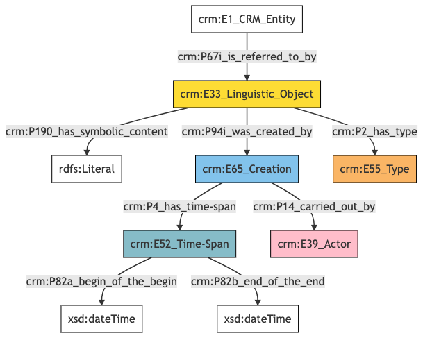
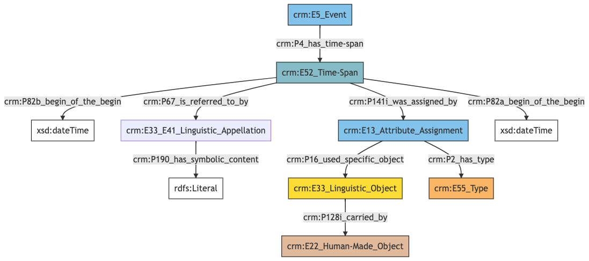

Collections
Author: Denitsa Nenova, George Bruseker
Version: 1.0
Collections are fixed sets of fields representing associated types of information that appear multiple times through a dataset. Collections are created for simplicity and clear data representation as well as documentation. Such collections are Statement, Timespan, and Uncertainty. Collection is listed as a data type in the model documentation above and the relevant collection is listed in square brackets after the data type.
Collection Statement
The Statement collection is used to combine fields assoicted with free-text information and any additional metadata associated with it such as:
| Filed ID | Name | Description | Data Type | CRM Path |
|---|---|---|---|---|
| fie_cen_36 | Statement Content | This field is used to record the textual content of a statement about the documented entity. | String | --> P67i --> E33[C36_1] --> P190 --> rdfs:literal |
| fie_cen_37 | Statement Type | This field is used to record the foram type of the statement made about the documented entity. | Concept | --> P67i --> E33[C36_1] --> P2 --> E55[37_1] |
| fie_cen_38 | Statement Created By | This field is used to record the actor authored the statement made about the documented entity. | Reference Model [Person/Group] | --> P67i --> E33[C36_1] --> P94i --> E65[C38_1] --> P14 --> E39[C38_2] |
| fie_cen_39 | Statement Earliest Date | This field is used to record the earliest date associated with the creation of a statement made about the documented entity. | Date | --> P67i --> E33[C36_1] --> P94i --> E65[C38_1] --> P4 --> E52[C39_1] --> P82a --> xsd:dateTime |
| fie_cen_40 | Statement Latest Date | This field is used to record the latest date associated with the creation of a statement made about the documented entity. | Date | --> P67i --> E33[C36_1] --> P94i --> E65[C38_1] --> P4 --> E52[C39_1] --> P82b --> xsd:dateTime |
- Statement Graph

- Statement RDF
@prefix crm: <http://www.cidoc-crm.org/cidoc-crm/> .
@prefix xsd: <http://www.w3.org/2001/XMLSchema#> .
<https://census.de/example/object/E1> a crm:E1_CRM_Entity ;
crm:P67i_is_referred_to_by <https://example.org/conceptual_object/C36_1> .
<https://example.org/actor/C38_2> a crm:E39_Actor .
<https://example.org/conceptual_object/C36_1> a crm:E33_Linguistic_Object ;
crm:P190_has_symbolic_content "statement content" ;
crm:P2_has_type <https://example.org/type/37_1> ;
crm:P94i_was_created_by <https://example.org/event/C38_1> .
<https://example.org/event/C38_1> a crm:E65_Creation ;
crm:P14_carried_out_by <https://example.org/actor/C38_2> ;
crm:P4_has_time-span <https://example.org/time_span/C39_1> .
<https://example.org/time_span/C39_1> a crm:E52_Time-Span ;
crm:P82a_begin_of_the_begin ""^^xsd:dateTime ;
crm:P82b_end_of_the_end ""^^xsd:dateTime .
<https://example.org/type/37_1> a crm:E55_Type .
- Statement JSNO-LD
{
"@context": "https://linked.art/ns/v1/linked-art.json",
"@graph": [
{
"classified_as": [
"https://example.org/type/37_1"
],
"content": "statement content",
"created_by": "https://example.org/event/C38_1",
"id": "https://example.org/conceptual_object/C36_1",
"type": "LinguisticObject"
},
{
"id": "https://census.de/example/object/E1",
"referred_to_by": [
"https://example.org/conceptual_object/C36_1"
],
"type": "CRMEntity"
},
{
"id": "https://example.org/actor/C38_2",
"type": "Actor"
},
{
"begin_of_the_begin": "",
"end_of_the_end": "",
"id": "https://example.org/time_span/C39_1",
"type": "TimeSpan"
},
{
"carried_out_by": [
"https://example.org/actor/C38_2"
],
"id": "https://example.org/event/C38_1",
"timespan": "https://example.org/time_span/C39_1",
"type": "Creation"
},
{
"id": "https://example.org/type/37_1",
"type": "Type"
}
]
}
Collection Timespan
The Timespan collection is used to combine fields assoicted with the duration of an event and any additional metadata associated with it such as:
| Filed ID | Name | Description | Data Type | CRM Path |
|---|---|---|---|---|
| fie_cen_1 | Timespan Statement | This field is used to record a textual content of a statement made about the timespan of the documented event. | String | --> P4 --> E52[C1_1] --> P67i --> E33_E41 [C1_2] --> P190 --> rdfs:literal |
| fie_cen_3 | Timespan Attribution Type | This field is used to record the type of attribution assigning the timespan of the documented event. | Concept | --> P4 --> E52[C1_1] --> P141i --> E13[C3_1] --> p2 --> E55[C3_2] |
| fie_cen_4 | Timespan Earliest Date | This field is used to record the earliest date of the timespan of the documented event. | Date | --> P4 --> E52[C1_1] --> P82a --> xsd:dateTime |
| fie_cen_5 | Timespan Latest Date | This field is used to record the latest date of the timespan of the documented event. | Date | --> P4 --> E52[C1_1] --> P82b --> xsd:dateTime |
| fie_cen_6 | Timespan Document Source | This field is used to related the human-made object carrying a linguistic source of the type of attribution assigning the timespan of the documented event with the documented event. | Reference Model [Document] | --> P4 --> E52[C1_1] --> P141i --> E13[C3_1] --> P16 --> E33[C6_1] --> P128i -->E22[C6_2] |
- Timespan Graph

- Timespan RDF
@prefix crm: <http://www.cidoc-crm.org/cidoc-crm/> .
@prefix xsd: <http://www.w3.org/2001/XMLSchema#> .
<https://census.de/example/event/E5> a crm:E5_Event ;
crm:P4_has_time-span <https://example.org/time_span/C1_1> .
<https://example.org/appellation/C1_2> a crm:E33_E41_Linguistic_Appellation ;
crm:P190_has_symbolic_content "timespan statement" .
<https://example.org/conceptual_object/C6_1> a crm:E33_Linguistic_Object ;
crm:P128i_carried_by <https://example.org/physical_object/C6_2> .
<https://example.org/event/C3_1> a crm:E13_Attribute_Assignment ;
crm:P16_used_specific_object <https://example.org/conceptual_object/C6_1> ;
crm:P2_has_type <https://example.org/type/C3_2> .
<https://example.org/physical_object/C6_2> a crm:E22_Human-Made_Object .
<https://example.org/time_span/C1_1> a crm:E52_Time-Span ;
crm:P141i_was_assigned_by <https://example.org/event/C3_1> ;
crm:P67_is_referred_to_by <https://example.org/appellation/C1_2> ;
crm:P82a_begin_of_the_begin ""^^xsd:dateTime ;
crm:P82b_begin_of_the_begin ""^^xsd:dateTime .
<https://example.org/type/C3_2> a crm:E55_Type .
- Timespan JSNO-LD
{
"@context": "https://linked.art/ns/v1/linked-art.json",
"@graph": [
{
"id": "https://example.org/physical_object/C6_2",
"type": "HumanMadeObject"
},
{
"classified_as": [
"https://example.org/type/C3_2"
],
"id": "https://example.org/event/C3_1",
"type": "AttributeAssignment",
"used_specific_object": [
"https://example.org/conceptual_object/C6_1"
]
},
{
"id": "https://census.de/example/event/E5",
"timespan": "https://example.org/time_span/C1_1",
"type": "Event"
},
{
"id": "https://example.org/type/C3_2",
"type": "Type"
},
{
"assigned_by": [
"https://example.org/event/C3_1"
],
"begin_of_the_begin": "",
"crm:P67_is_referred_to_by": {
"id": "https://example.org/appellation/C1_2"
},
"crm:P82b_begin_of_the_begin": {
"@value": "",
"type": "xsd:dateTime"
},
"id": "https://example.org/time_span/C1_1",
"type": "TimeSpan"
},
{
"content": "timespan statement",
"id": "https://example.org/appellation/C1_2",
"type": "Name"
},
{
"crm:P128i_carried_by": {
"id": "https://example.org/physical_object/C6_2"
},
"id": "https://example.org/conceptual_object/C6_1",
"type": "LinguisticObject"
}
]
}
Collection Uncertainty
The Uncertainty collection is used to combine fields defining the level of confidence when assigning a specific type to an entity and any additional metadata associated with it such as:
| Filed ID | Name | Description | Data Type | CRM Path |
|---|---|---|---|---|
| fie_cen_77 | Uncertainty Type | This field is used to record the concept of uncertainty as a type defining specific attribution to the documented entity. | Concept | --> P141i --> E13[C77_1] --> P140 --> E55[C77_2] |
| fie_cen_78 | Uncertainty Type Note | This field is used to record a statement about the concept of uncertainty defining specific attribution to the documented entity. | String | --> P141i --> E13[C77_1] --> P140 --> E55[C77_2] --> P67i --> E33[C78_1] --> P190 --> rdfs:literal |
| fie_cen_79 | Uncertainty Type Attributed By | This field is used to record the actor who assigned the concept of uncertainty as a type defining specific attribution to the documented entity. | Reference Model [Person/Group] | --> P141i --> E13[C77_1] --> P140 --> E55[C77_2] --> P141i --> E13[C79_1] --> P14 --> E39[C79_2] |
- Uncertainty Graph
- Uncertainty RDF
@prefix crm: <http://www.cidoc-crm.org/cidoc-crm/> .
<https://census.de/example/type/E55> a crm:E55_Type ;
crm:P141i_was_assigned_by <https://example.org/event/C77_1> .
<https://example.org/actor/C79_2> a crm:E39_Actor .
<https://example.org/conceptual_object/C78_1> a crm:E33_Linguistic_Object ;
crm:P190_has_symbolic_content "uncertainty note" .
<https://example.org/event/C77_1> a crm:E13_Attribute_Assignment ;
crm:P140_assigned_attribute_to <https://example.org/type/C77_2> .
<https://example.org/event/C79_1> a crm:E13_Attribute_Assignment ;
crm:P14_carried_out_by <https://example.org/actor/C79_2> .
<https://example.org/type/C77_2> a crm:E55_Type ;
crm:P141i_was_assigned_by <https://example.org/event/C79_1> ;
crm:P67i_is_referred_to_by <https://example.org/conceptual_object/C78_1> .
- Uncertainty JSNO-LD
{
"@context": "https://linked.art/ns/v1/linked-art.json",
"@graph": [
{
"assigned_to": "https://example.org/type/C77_2",
"id": "https://example.org/event/C77_1",
"type": "AttributeAssignment"
},
{
"content": "uncertainty note",
"id": "https://example.org/conceptual_object/C78_1",
"type": "LinguisticObject"
},
{
"carried_out_by": [
"https://example.org/actor/C79_2"
],
"id": "https://example.org/event/C79_1",
"type": "AttributeAssignment"
},
{
"id": "https://example.org/actor/C79_2",
"type": "Actor"
},
{
"assigned_by": [
"https://example.org/event/C79_1"
],
"id": "https://example.org/type/C77_2",
"referred_to_by": [
"https://example.org/conceptual_object/C78_1"
],
"type": "Type"
},
{
"assigned_by": [
"https://example.org/event/C77_1"
],
"id": "https://census.de/example/type/E55",
"type": "Type"
}
]
}